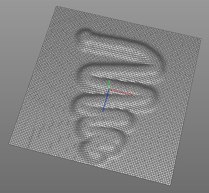
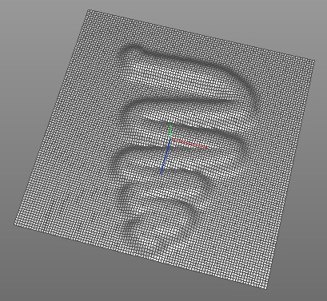
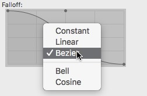

Brush
The brush tool can be used to either draw displacements (sculpting), or colors (vertex color) on a polygon mesh.
  A displacement painted with the push/pull brush.
 A displacement painted with the push/pull brush.
Modes
The brush tool is available in point, edge, polygon and object mode and can only be applied on raw polygon objects.


To use the Brush tool you first have to select an editable polygon object and then pick the Brush tool via the "Tools->Polygon->Brush" menu item. Now you can start painting on the mesh.
Properties
- Type: The brush type.
- Emboss: The emboss brush moves the vertices within the brush radius along the vertex normal.
- Move: The move brush works like a magnet and pulls the vertices within the brush radius into the direction of the mouse cursor.
- Pull/Push: The pull/push brush can be used to paint displacements on a mesh. Hereby the vertices are moved along the vertex normal.
- Smooth: The smooth brush smoothes out uneven meshes.
- Color: The color brush paints vertex colors on a mesh. It automatically creates a vertex color tag if it doesn't already exists.
- Color: The color which is used for painting vertex colors.
- Strength: The strength of the brush.
- Radius: The radius of the brush (in screen space pixels).
- Focus: The inner radius of the brush (relative to the outer radius). Vertices within that radius are weighted with 100%.
- Additive: When checked, the brush weights are slowly accumulated.
- Falloff: The falloff curve of the brush. This profile is applied to vertices which are within the brush radius but outside the inner (focus) brush radius.
The Falloff editor has a context menu with some predefined profiles.